OPEN SOURCE · PCB DESIGN AS CODE
CopperScript
Hardware intent, written in code.
A typed language and compiler for printed circuit boards, built so that people and AI agents can make good design decisions and check every one of them.
github.com/andenore/CopperScript · andenore.github.io/CopperScript
01 / THE PROBLEM
A schematic says what connects.
It rarely says why.
A CAPACITOR
…protects one particular pin.
Its value is on the schematic. Which supply pin it decouples, and how close it must sit, is not.
A CONVERTER
…has a critical current loop.
The hot loop and its switch node decide the board’s emissions. A netlist shows neither.
A RADIO
…needs geometry and a return path.
Reference layouts and keepouts live in application notes, not in the design file.
In a graphical CAD tool this intent stays in the designer’s head, the datasheet and a PDF. An AI agent sees none of it, so it cannot respect it or be checked against it.
02 / THE IDEA
Put the intent in the source,
and let a compiler check it.
READABLE
Plain text, under version control
A board is .copper source: reviewed, diffed and merged like software. Libraries are versioned and pinned by hash.
TYPED
Facts with units and roles
Voltages, currents, rise times and tolerances carry units. Pins carry domains, directions, ratings and roles such as decoupling or switch node.
CHECKED
Every decision gets feedback
Electrical rules, power states, simulation, EMI screening, routing and DRC all read the same source and report located findings.
The same source then drives placement, routing, manufacturing files and KiCad export, so the intent is never retyped and never lost between tools.
03 / HOW THE LANGUAGE WORKS
A small set of typed building blocks.
| Block | What it declares |
|---|---|
| part · device | A component’s pins, domains, directions, ratings and roles; a device’s silicon pads, power domains and peripheral mux options |
| component | One placed instance of a part, with its value, footprint and relationships such as decouples = U1.VDD |
| net · supply | Connections, and the rails that power them, with voltage and current budgets |
| module | A reusable circuit with ports, instantiated on a board or simulated alone |
| constraint · mechanical | Outline, holes, keepouts, placement, routing rules, antennas and emission standards |
| power_state · bench | Steady-state rail scenarios, and simulation benches with measures and limits |
| physical_macro · panel · build | Reusable hard layouts, fabrication panels and build settings, in source |
04 / FACTS AND RELATIONSHIPS
Parts hold facts; boards hold intent.
library: part definition (abridged)
part OPAMP_LOW_NOISE {
pin VP { domains = "power"; … }
sim opamp { gbw = 18MHz; … }
}
board: component
component C_VP: CAPACITOR {
value = 100nF; role = decoupling;
decouples = U1.VP; }
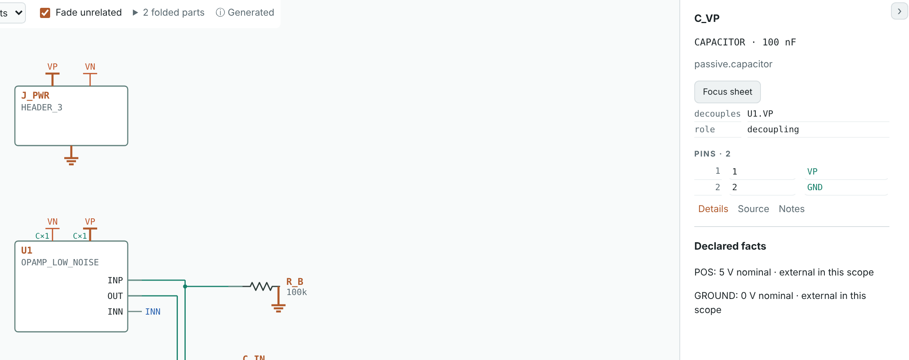
The relationship survives compilation. CopperReview’s generated schematic folds C_VP onto the pin it protects (“C×1” on U1.VP) and lists decouples U1.VP; the same fact informs decoupling placement.
05 / PHYSICAL INTENT
Mechanics live in the same file.
mechanical {
outline rounded_rectangle { width = 40mm;
height = 30mm; corner_radius = 3mm; }
slot MOUNT { start = (17mm, 10mm);
end = (23mm, 10mm); width = 1.5mm; }
hole H1 { position = (5mm, 25mm);
diameter = 2mm; }
}
constraint fixed_placement(R1) {
x = 8mm; y = 10mm; rotation = 0; side = front;
}
Outlines, curves, cutouts, slots, holes, keepouts, heights and datums; placement and routing rules sit beside them.
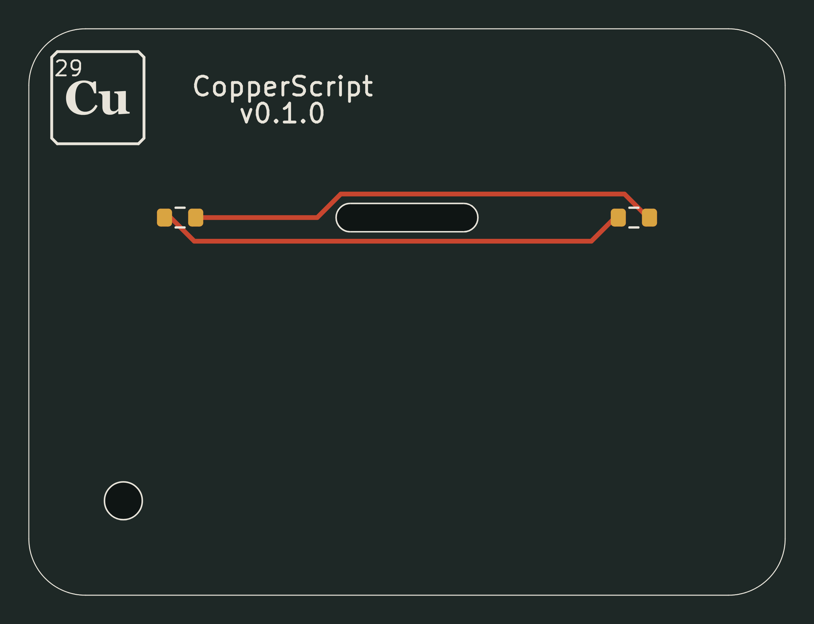
The example after route-board: both nets pass either side of the slot.
06 / DEPENDENCIES
Import parts by URL, pinned by hash.
// board.copper: a package, imported by its URL
import nordic "github.com/andenore/CopperLib/packages/parts/nordic/nrf52832";
component U_NRF: nordic.NRF52832_QFAA;
// copper.mod: the exact revision of each library, and local overrides
require github.com/andenore/CopperLib 50655eff5613690a606c9dd1de456b2adae249df
require github.com/KiCad/kicad-footprints 7ebfa6b23cc292a56f751b7b5f4a0e12eeef69dd
replace github.com/copperscript/examples => ../packages
Every byte locked
copper.lock keeps a SHA-256 for each part, footprint and 3D model; --locked rejects any change.
Reproducible offline
GitHub or GitLab at a tag or commit, fetched once; --offline never touches the network.
Data, never code
Packages hold declarations only. Nothing in a dependency is ever executed.
07 / LIBRARY CONTEXT
Ask the library, get its sources.
$ copper library search "coin cell holder"
{ "symbol": "KEYSTONE_3034",
"manufacturer": "Keystone Electronics",
"category": "connector.battery.coin_cell",
"source_document": "Keystone M65 catalogue:
3034 SMT retainer for 20 mm cells",
"source_location": "M65 catalogue page 9,
figure 1 and 3034 row",
"source_url": "https://www.keyelco.com/…/M65p9.pdf",
"version": "50655eff…",
"source_sha256": "sha256:28432c0c…" }
Only what you declared
Search covers the project’s pinned dependencies, not the whole internet.
One section at a time
library inspect returns interfaces, requirements or notes on request.
Facts cite their source
Down to the page and figure. A fact without one stays unresolved.
08 / PERIPHERAL SELECTION
Choose pins; the compiler checks the mux.
// library: the MCU’s device (excerpt)
peripheral I2C2: i2c {
signal SDA: open_drain;
signal SCL: open_drain;
}
mux PA6: I2C2.SDA { selector = "AF8"; }
// board
configure U_MCU.I2C2 as MOTION_I2C {
SDA = PA6; SCL = PA7;
}
ERC checks required signals, the package’s pins, double use, drive types and shared resources.
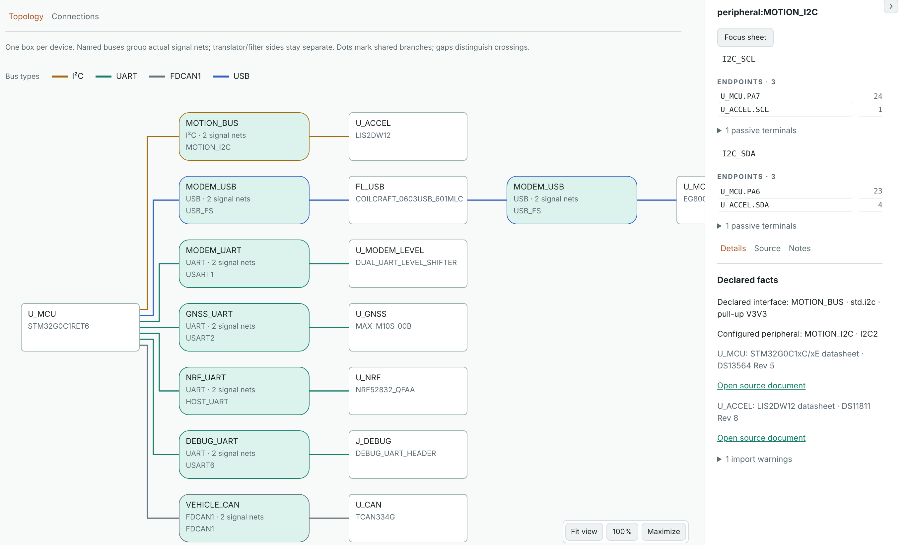
CopperReview’s bus view of the full-vertical example, generated from its IR.
09 / MODULES AND POWER STATES
Reusable circuits and declared power states.
module AnalogFrontEnd {
port VP: power_in;
port VN: power_in;
// pump, buffers, receiver …
}
// board
module AFE: AnalogFrontEnd;
net VP { U_LDOP.OUT; AFE.VP; … }
power_state SLEEP {
VP = off; … }
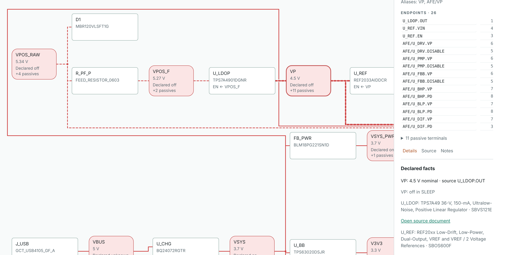
The impedance analyzer in SLEEP: VP is declared off, and the module sees it as AFE/VP. copper power-check checks every state for back-power.
10 / DIFFERENTIAL PAIRS AND SKEW
A four-lane CSI-2 link, matched in source.
// the clock pair; D0–D3 are declared the same way
constraint routing(CSI_CLK_P) {
kind = differential; partner = CSI_CLK_N;
width = 0.14mm; pair_gap = 0.26mm;
max_skew = 0.1mm; // P against N
target_impedance_ohms = 100; // differential
target_single_ended_ohms = 50;
allowed_layers = "F.Cu"; max_vias = 0;
layer_group = "csi"; // clock + lanes
}
constraint length_match(CSI_CLK_P, CSI_CLK_N,
CSI_D0_P, CSI_D0_N, … CSI_D3_P, CSI_D3_N) {
id = "csi-lanes"; max_skew = 0.5mm;
}
$ copper si-check board.copper
CLK diff 99.7 Ω · SE 51.9 Ω pass
D0–D3 diff 99.7 Ω · SE 51.9 Ω pass ×4
MATCH csi-lanes: 10 nets, ≤ 0.5 mm
LAYER csi: clock + 4 lanes
- Before routing, impedance is screened against the declared stack-up
- The router compensates skew inside each pair, then tunes the group to its longest lane with bumps or serpentines
- A miss is a DRC-LENGTH-MATCH review warning, never hidden
11 / LENGTH MATCHING, ROUTED
Serpentines that keep the pair coupled.
without the length_match group
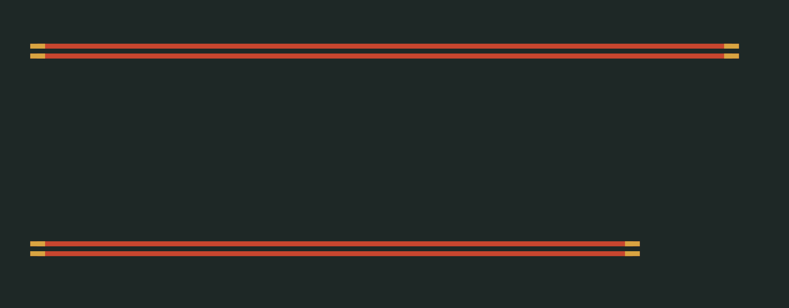
with length_match and tuning_style = "serpentine"
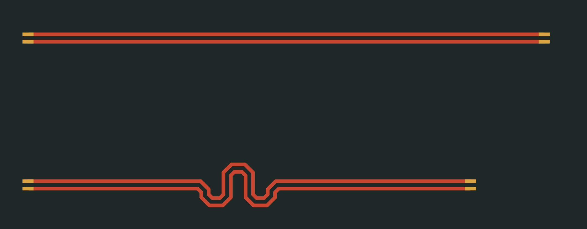
constraint routing(LANE_B_P) { …
tuning_style = "serpentine";
tuning_amplitude_limit = 1mm; }
constraint length_match(LANE_A_P, LANE_A_N,
LANE_B_P, LANE_B_N) { max_skew = 0.1mm; }
4.0 → 0 mm
group skew, tuned
4 legs
up to 0.91 mm high
0 mm
pair skew: both members bend
0
DRC violations
12 / ANTENNA SYNTHESIS
Declare the band. Synthesize the copper.
constraint antenna(ANT1.FEED) {
name = "bt";
x = 18mm; y = 0mm;
width = 22mm; height = 6mm;
ground = GND;
bands = "2400 MHz-2483.5 MHz";
track_width = 1mm;
// pasted from synthesize-antenna
geometry =
"monopole height=5.3mm length=22.77mm";
tuned_for = "sha256:fadfbf76…95ba";
}
The digest binds the geometry to this board’s outline, stack-up, ground and feed. Change one and the board stops compiling until synthesis runs again.
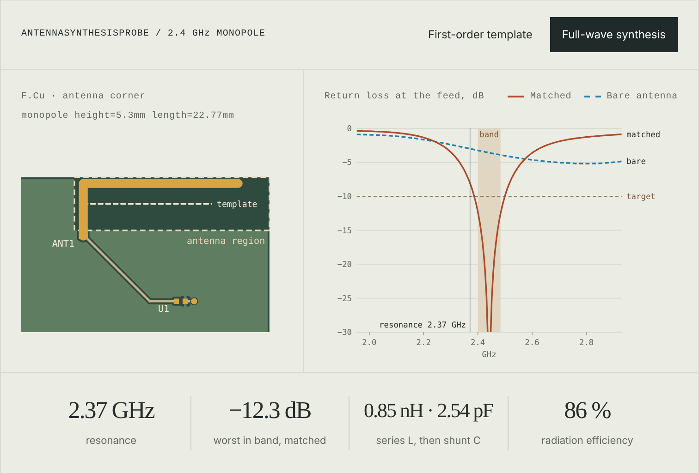
13 / VENDOR MODELS
Vendor models by URL, checked by hash.
part OPA810_VENDOR {
sim spice {
source = "https://www.ti.com/lit/zip/SBOMB73";
sha256 = "bee7ec13…905c4a0a0";
member = "opa810_a.lib";
subckt = "OPA810"; dialect = pspice;
}
}
part Widget {
model = "https://vendor.example/models/Widget.step";
model_sha256 = "…";
model_redistributable = false;
}
SPICE and 3D models stay on the vendor’s site and under the vendor’s terms.
- copper models fetch downloads them once into the project cache
- Builds never download; a changed file fails its hash
- Nothing is shipped unless the part says it may be
- copper sim --check-model compares a vendor model with the built-in one
14 / BUILD SETTINGS AND PANELS
Fab settings and panels are source too.
panel ExamplePanel {
spacing = 2 mm; fiducials = 3;
rails = { top = 5 mm; bottom = 5 mm; };
mouse_bite = { drill = 0.5 mm;
pitch = 0.75 mm; inset = 0.25 mm; };
board MONO { … at = (0 mm, 0 mm); }
board IFA { … at = (42 mm, 0 mm); }
tab mono_top { board = MONO;
side = top; at = 8 mm; }
}
A board’s build block keeps its fab profile and routing settings in source; the command line still overrides it.
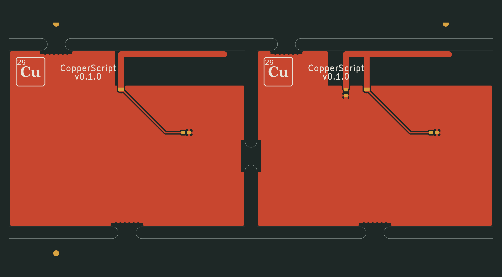
examples/panel after copper panelize, fill and DRC (0 violations): one board for the whole panel.
15 / FROM SOURCE TO COPPER
Every transformation stays inspectable.
Describe
Parts, nets, supplies and constraints in .copper
source + lock
Check & simulate
Electrical rules, power states and benches
IR + results
Place, route & screen
Bounded pipeline, hard macros, EMI screening
board + report
Fill, check & plot
Native zone fill, DRC, Gerbers and panels
fab files
Review & qualify
CopperReview, then lab and prototype evidence
a decision
Each stage writes JSON with a schema and the SHA-256 of its inputs. Changed inputs invalidate old evidence, and missing evidence stays visible instead of turning into a pass.
16 / BUILD AND ROUTE A BOARD
Four commands from source to fab files.
1 · CHECK
copper check board.copper --locked
Electrical rules and ratings; every imported package verified against copper.lock.
2 · BUILD
copper build board.copper --locked
Route, fill zones, run DRC and a completion gate; run.json binds every output by SHA-256.
3 · ITERATE
copper issues RUN · copper view RUN
Grouped, located causes and a picture per layer. Fix the source or constraints, then build again.
4 · EXPORT
copper export-manufacturing --run run.json
Gerbers, drills, netlist and positions, read back against the board; refuses a failed or stale run.
The fab profile and placement and routing settings live in the board’s build block, so the commands stay short. KiCad is optional, as an independent cross-check.
17 / FINDING THE CAUSE
copper issues names it. copper view shows it.
$ copper issues RUN
fail 19 grouped issue(s)
X1 ESCAPE-CROSSING SNK/J and SRC/J:
21 crossing net pairs on one layer;
move CSI_AN, CSI_AP, … to another layer
C1 CRITICAL-UNROUTED planned crossing
is impossible on In2.Cu
$ copper view RUN --issue X1
layers F.Cu · 75 pads, 127 track segments
pad SRC/J.14 CSI_AP @(15.400, 8.175)
pad SNK/J.14 CSI_AP @(52.175, 32.600)
…
Each issue has an id, a cause and a place. The view rings its pads on every copper layer and prints a legend that often answers the question without the picture.
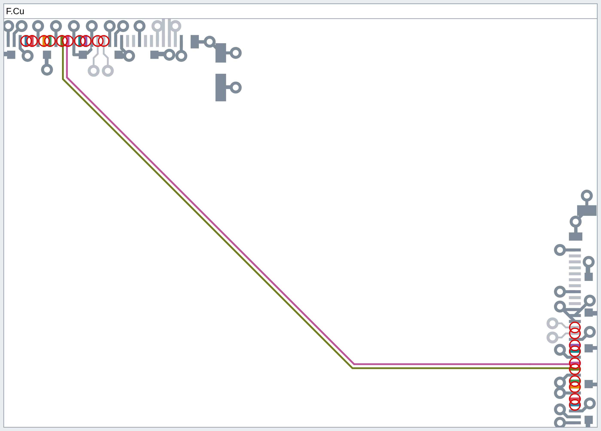
18 / WORKS WITH KICAD
KiCad stays in the loop.
CopperScript is the source; KiCad is an export target, a library source and an independent check. Finish, review or hand over a design in KiCad at any point.
Native KiCad projects
Every board command writes .kicad_pcb, .kicad_pro and its footprint library; export-kicad writes a KiCad schematic.
KiCad’s own libraries
Footprints and 3D models come from KiCad’s repositories, pinned by commit in copper.mod.
An independent check
--verify kicad refills and runs DRC with kicad-cli; compare-cam compares two plots.
Reference layouts
copper view --reference overlays a KiCad board, such as a manufacturer’s evaluation layout, aligned on the package pads.
19 / WHY IT SUITS AI AGENTS
An agent makes good decisions when every decision gets fast, located and honest feedback.
CopperScript turns board design into that loop: text the agent can write, facts it can retrieve, and a compiler that answers in seconds.
20 / COMPARED WITH OTHER WAYS
What an agent works with in each approach.
| The agent needs | GUI EDA: KiCad, Altium | Netlist as code, e.g. SKiDL | CopperScript |
|---|---|---|---|
| Something to write | Clicks, or drawing files of symbols and geometry | Code that emits a netlist | Typed source: connections and intent |
| The intent | In the designer’s head and datasheets; partly as rules and net classes | Mostly connectivity; layout intent is left to the PCB tool | Roles, decoupling targets, pairs, skew and bands, compiled and checked |
| Feedback it can read | ERC and DRC reports, markers in the GUI | Language errors, then the PCB tool’s checks | Located JSON findings with codes, hints and fixes |
| A layout | Interactive, expert-driven and mature | Done by hand in a GUI tool | A bounded automatic pipeline (experimental) with grouped issues and views |
| Trustworthy inputs | Libraries and versions managed by hand | Code in Git; part data varies | Pinned packages with source references; every byte hashed |
Simplified: each tool has scripting, plug-ins and exceptions. KiCad and Altium remain the reference for interactive, expert layout.
21 / WHERE AGENTS GO WRONG
Each common mistake meets a check.
| The agent… | What catches it in CopperScript |
|---|---|
| invents a pin, footprint or rating | Parts come from pinned libraries with cited sources; unknown facts stay unresolved |
| connects the right nets with the wrong intent | Roles and relationships compile; ERC checks ratings, rails, buses and open pins |
| cannot see the layout it produced | copper issues and copper view: located causes, legends and pictures |
| takes “it compiles” for “it works” | Every report says what it did not check; screening is never a pass |
| patches one board instead of the method | Clear ownership; routing fixes go into generic algorithms, checked against reference layouts |
| loses track of what changed | The lock and run.json hash every input and output; stale results are refused |
22 / THE AGENT LOOP
Retrieve, write, check, fix. Repeat.
Orient
A guide bundled with the compiler, one topic at a time
agent-guide
Retrieve
Search pinned libraries; inspect one part’s contract
library inspect
Write
Compose the board in .copper source
board.copper
Check
Located findings, codes, hints and fixes as JSON
check --json
Diagnose
Explain a code, query the design, view an issue
explain · issues
The agent never has to read the whole manual, re-parse its own source or write a one-off script to see what went wrong. The compiler already answers those questions.
23 / DESIGNED FOR GOOD DECISIONS
Six choices that keep an agent honest.
01
Text, not clicks
The agent writes source it can diff and explain. No GUI to drive, no hidden state.
02
Retrieve, don’t guess
Parts come from pinned libraries with datasheet facts. Unknown facts stay unresolved.
03
Units catch nonsense
Typed quantities and pin roles turn a wrong voltage or a fighting output into an error.
04
Compact, located feedback
Codes, lines, hints and fixes in versioned JSON. Summaries are bounded; details on request.
05
No silent passes
A missing input never becomes a pass. Stale results are refused. Screening is never a verdict.
06
Fix the method
Routing failures improve generic algorithms, compared with reference layouts, not one board.
24 / WHAT THE AGENT SEES
copper check --json, on a broken board.
{ "code": "SUPPLY_VOLTAGE_HIGH",
"severity": "error",
"subject": "U1.VDD",
"message": "5 V exceeds the pin
maximum 3.6 V",
"location": { "line": 15 } }
{ "code": "UNMARKED_PIN",
"severity": "warning",
"subject": "U1",
"hint": "connect them, or declare
intent with no_connect
U1.PA0, U1.TX { reason }" }
Located
File, line and subject: the agent edits the right place, not a guess.
Named
A stable code that copper explain describes, so the agent learns the rule.
Deliberate
An open pin needs a no_connect with a reason, so omissions and decisions differ.
25 / GENERATED REVIEW VIEWS
One design, three views for review.
CopperReview draws all three from the compiled design. Nothing is drawn by hand, so the views never drift from the source.
SCHEMATIC
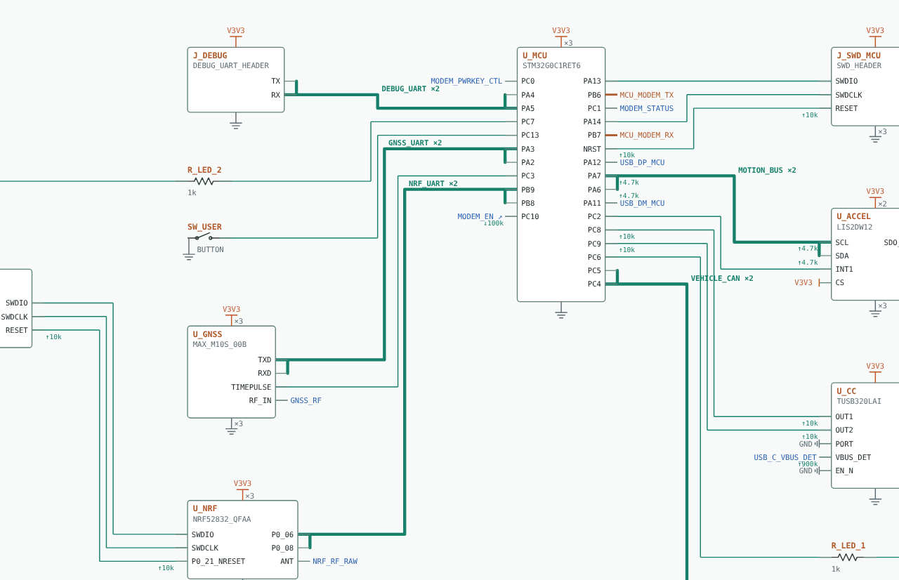
Sheets generated from the IR. Passives fold onto the pins they serve, and buses read as named nets.
POWER TOPOLOGY
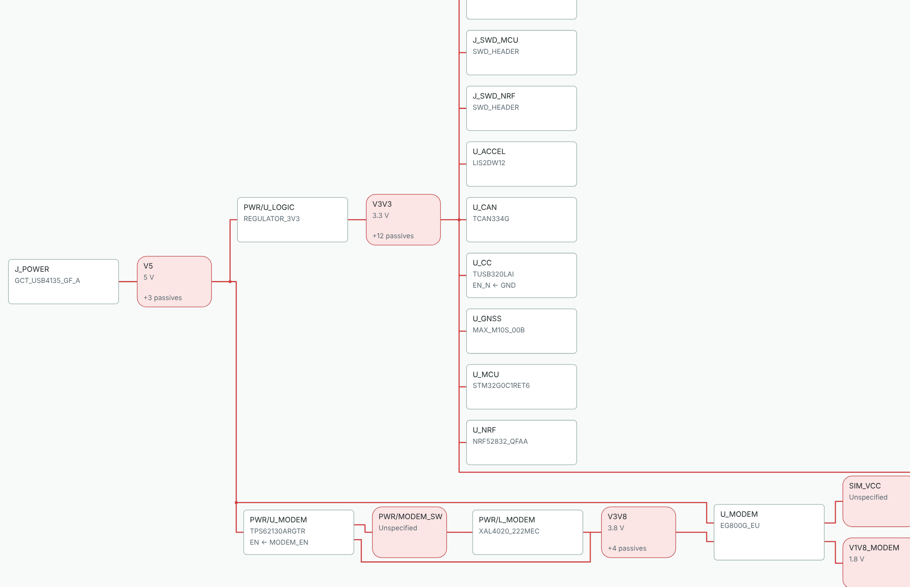
Every rail from source to load, with voltages and enables. Pick a declared power state to see what is off.
BUS TOPOLOGY
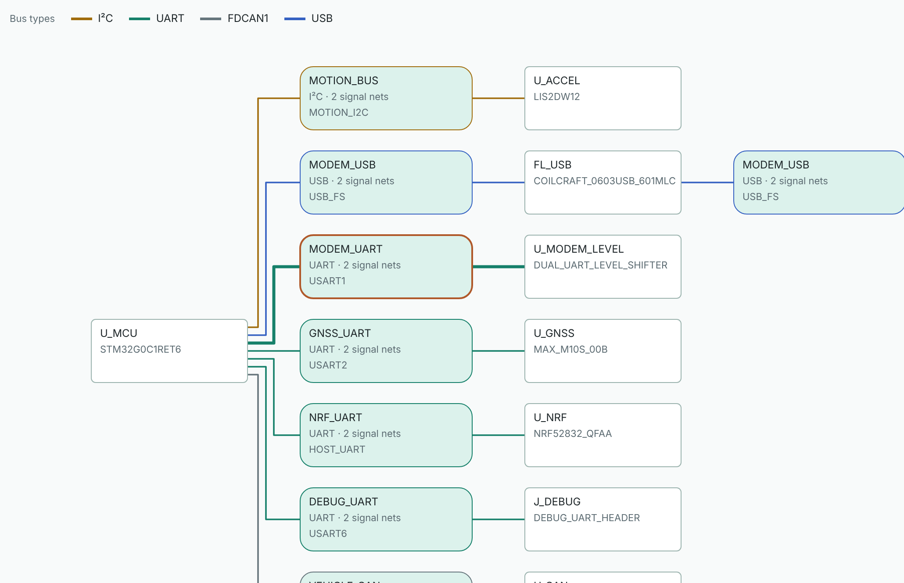
Each configured peripheral as a named bus, with its signal nets, pins and the datasheets behind them.
26 / ASSEMBLY MODE
Guided manual pick-and-place.
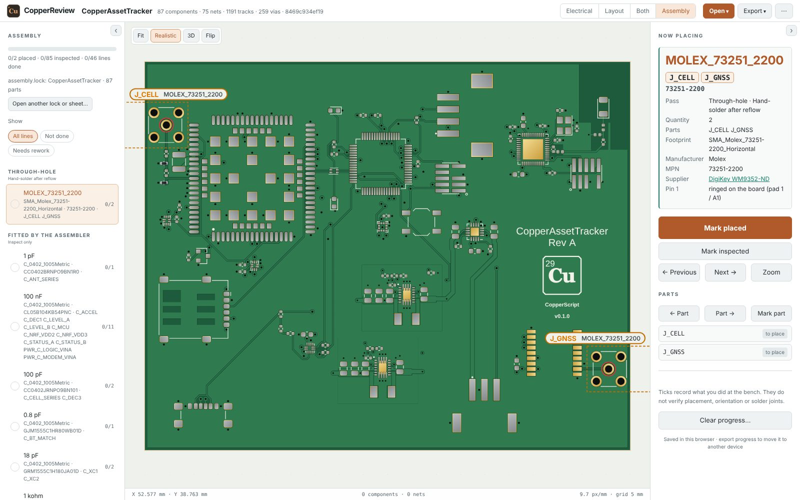
From the board and its assembly.lock:
- A plan in passes: one side’s SMD, the other side, through-hole, then parts to inspect only
- One line per identical part; its parts outlined, pin 1 ringed, the board flipped for the back
- Manufacturer, MPN and supplier for the part in hand
- Space marks a line placed, I inspected; progress saves and exports
Ticks record what was done at the bench; they do not verify placement, orientation or solder joints.
27 / PEOPLE STAY IN THE LOOP
Humans review; the next run listens.
CopperReview in the browser
Schematic, power and bus topology, layout, 3D, EMI and assembly views of the compiled board, running the same compiler as WebAssembly. Select parts, nets or a region, write what should improve, cite issue ids, and export a review the next LLM-assisted run can read.
The viewer is read-only: notes never edit the board or its constraints.
Clear ownership
| Repository | Owns |
|---|---|
| CopperScript | Language, compiler and generic algorithms |
| CopperLib | Versioned parts, circuits and contracts |
| A board repo | Composition and its evidence |
An agent knows where a change belongs, so a fix for one board does not leak into the compiler.
28 / INCLUDED TODAY
One compiler, from source to fab files.
Electrical checks
Ratings, power states, buses, open pins
Versioned libraries
Pinned by hash, searchable contracts
Mechanical design
Outlines, holes, keepouts, visual editor
Place & route
Bounded, experimental, well diagnosed
Hard macros
Reusable layouts in native .copper
Antenna synthesis
Full-wave FDTD tuning and matching
Circuit simulation
AC, noise, transient, Monte Carlo, SPICE
EMI screening
Hot loops, conducted spectra, cables
Native fab output
Fill, DRC, Gerbers, drills, read-back
Panelization
Rails, tabs, mouse bites, fab presets
KiCad export
Projects with footprints and 3D models
Editor & review
Language server, VS Code, CopperReview
29 / ANALYSIS IN THE COMPILER
Real numbers from the examples.
CIRCUIT SIMULATION
66.8 nV/√Hz
preamp output noise at 1 kHz. The bench’s own hand estimate: about 67. Five benches, with a 200-board Monte Carlo, in about 0.1 s.
EMI SCREENING
+49.6 dB
buck converter over the CISPR 32 class B average limit with no input filter; 6.4 dB under with an LC filter (and a 2 A load).
ANTENNA SYNTHESIS
2.37 GHz
monopole resonance after full-wave tuning, from 2.72 GHz for the quarter-wave template; 86 % radiation efficiency.
An agent can ask “is this good?” and get a number tied to the source, instead of a guess. Every one is evidence for review, not a qualification.
30 / A REAL DESIGN
The asset tracker, routed natively.
STM32 host, LTE Cat-1 bis, GNSS, Bluetooth and motion sensing on a six-layer, 100 × 80 mm board.
87
footprints
60 / 60
ordinary nets connected
259
vias, 1191 track segments
0
native DRC violations
31 / WHAT IT DOES NOT CLAIM
Evidence, not approval.
| Result | What it does not establish |
|---|---|
| Clean ERC and native DRC | Electrical, RF, power, assembly or CAM qualification |
| A routed board | That the router will close another design: routing is experimental |
| Passing simulation benches | Board behaviour: layout parasitics are not in the benches yet |
| EMI screening | EMC compliance: it ranks likely sources and never reports a pass |
| A synthesized antenna | Performance in the enclosure: bench tuning and testing remain |
This honesty is part of what makes the tool safe for agents: a result says exactly what was checked, so nothing unverified looks finished.
32 / GET STARTED
Start with a small circuit.
git clone https://github.com/andenore/CopperScript
cd CopperScript
cargo install --locked --path crates/copper
# orient, then check and compile
copper agent-guide
copper check examples/valid_board/board.copper
# simulate a low-noise preamp
copper sim examples/simulation/preamp/board.copper
Website
andenore.github.io/CopperScript
Libraries
github.com/andenore/CopperLib
Review in the browser
andenore.github.io/CopperReview